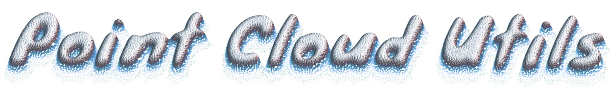

Point Cloud Utils is an easy-to-use Python library for processing and manipulating 3D point clouds and meshes.
Note
In spite of its name, Point Cloud Utils should really be thought of as a general purpose geometry library, used for more than operating on point clouds.
Installation
pip install point-cloud-utils
Source Code
Point Cloud Utils is open source with the GPL-v2 license. The source code is available on GitHub
A very simple example
Point Cloud Utils uses NumPy arrays as fundamental data structure, making it very easy to integrate with existing numerical code. For example, here's how to remove all points in a point cloud which are greater than some distance from a mesh.
import point_cloud_utils as pcu
# Load a mesh stored in my_mesh.ply:
# v is a NumPy array of coordinates with shape (V, 3)
# f is a NumPy array of face indices with shape (F, 3)
v, f = pcu.load_mesh_vf("my_mesh.ply")
# Load a point cloud stored in my_point_cloud.ply:
# p is a NumPy array of point coordinates with shape (P, 3)
p = pcu.load_mesh_v("my_point_cloud.ply")
# Compute the shortest distance between each point in p and the mesh:
# dists is a NumPy array of shape (P,) where dists[i] is the
# shortest distnace between the point p[i, :] and the mesh (v, f)
dists, _, _ = pcu.closest_points_on_mesh(p, v, f)
# Delete all points which are farther than some distance away from the mesh
dist_thresh = 0.1
keep_points = p[dists < dist_thresh]
# Save the filtered point cloud to my_point_cloud_trimmed.ply
pcu.save_mesh_v("my_point_cloud_trimmed.ply", keep_points)
Functionality
Point Cloud Utils includes utilities to perform the following tasks:
- Mesh and Point Cloud I/O. Point Cloud Utils can handle any file that can be opened in MeshLab.
- Resampling Point Clouds to have different distributions.
- Generating Point Samples on a Mesh.
- Computing Metrics Between Point Clouds (e.g. Chamfer Distance, Hausdorff Distance, etc...).
- Making a Mesh a Watertight Manifold.
- Computing Signed Distances (SDFs) to Meshes.
- Estimating Normals for Point Clouds.
- Computing Mesh Normals.
- Ray/Mesh Intersection.
- Generating Surfels from Point Clouds.
- Smooting a Mesh.
- Decimating a Mesh.
- Finding Closest Points Between Point Clouds and Meshes.
- Computing Connected Components of a Mesh.
- Deduplicating Point Clouds and Meshes.
- Calculating Mesh Face Areas.
- Consistently Orienting Mesh Faces.
- Morton Encoding/Decoding a Point Cloud.
Recipes for Common Tasks
We include recipes for common geometry tasks that you should be able to copy paste into your existing codebase. These only depend on Point-Cloud-Utils, NumPy and the Python standard library making them very easy to integrate with your code.
API Reference
All available functions and classes are listed in the API reference
About
Author: Francis Williams.
Source Code: https://github.com/fwilliams/point-cloud-utils
If Point Cloud Utils contributes to an academic publication, cite it as:
@misc{point-cloud-utils,
title = {Point Cloud Utils},
author = {Francis Williams},
note = {https://www.github.com/fwilliams/point-cloud-utils},
year = {2022}
}